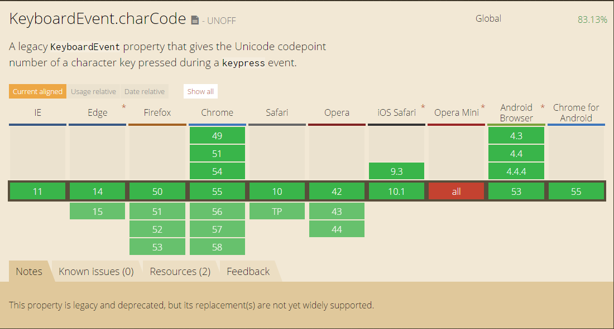
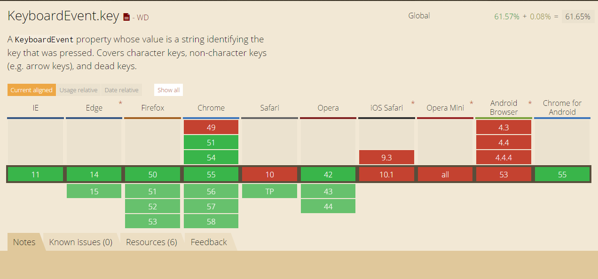

问题描述
先来看一个简单问题，在控制台输入下面的代码：
1 | // 测试平台 win10 chrome 55.0.2883.87 |
然后在页面上按小键盘上面的1键，你觉得会打印出什么？
结果为 ‘a’，why ?
问题原因
我们先看看MDN中是怎么解释 KeyboardEvent事件中的返回值
keyCode: This is usually the decimal ASCII.
which: this is usually the same askeyCode.详细信息可以看这个 keydown
可以看到我们拿到的返回值大多数情况下是键盘按键对应的ASCII码，具体的对照表
然后再看下String.fromCharCode()接受的参数是什么
The static String.fromCharCode() method returns a string created by using the specified sequence of Unicode values.
String.fromCharCode()接受的是一个Unicode编码，正是由于这个原因才导致我们解析出来的数据不正确。
关于Unicode编码与ASCII编码的相关知识可以看看这篇文章
解决方案
使用
KeyboardEvent事件中的key值，这种方式最直接，但是不支持Safari，如果不需要兼容苹果的设备这是最好的方式。
可以选择监听
keypress事件，这个事件对象有个独有的属性值charCode，返回的是Unicode编码。这样的话用String.fromCharCode()可以直接使用。
使用第三方的库 keycode
更多内容
几个小tips
keypress、input事件不会响应辅助按键，如：ctrlaltshift等，某些情况下会很方便。keypress、input事件不响应中文输入法- 中文输入法对应情况下
keydown的which值为299，keyup对应的值是正确的